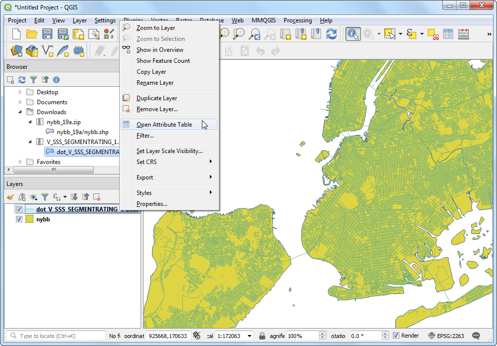

Ujaval Gandhi
Ujaval GandhiIzvršavanje prostornih spajanja (QGIS3)¶
Prostorno spajanje je klasičan GIS problem - prenos atributa sa jednog sloja na drugi na osnovu njihovog prostornog odnosa. U QGIS-u je ova funkcionalnost dostupna putem algoritma za obradu „Spajanje atributa po lokaciji“.
Pregled zadatka¶
Koristićemo 2 sloja - jedan shapefile sa granicama opštine Njujorka i drugi shapefile sa ocenom kolovoza ulica za sve ulice u Njujorku. Prvi zadatak će biti pronalaženje prosečne ocene ulica u svakoj opštini korišćenjem prostornog spajanja sa algoritmom sumiranja. Drugi zadatak će biti dodavanje imena opštine karakteristikama ulica putem prostornog spajanja jedan-na-više.
Druge veštine koje ćete naučiti¶
Kreiranje filtera za privremeno isključivanje određenih karakteristika iz izračunavanja.
Dobijte podatke¶
NYC Open Data Portal je odličan izvor besplatnih podataka za grad Njujork.
Preuzmite zip datoteku Granice opštine koristeći opciju Izvoz na portalu.

Preuzmite zip datoteku Street Pavement Rating koristeći opciju Izvoz na portalu.

Radi lakšeg snalaženja, možete direktno preuzeti kopiju skupova podataka sa donjih linkova:
Izvor podataka [CITYOFNY]
Procedura¶
Pronađite datoteku
nybb_19a.zipu QGIS pregledaču i proširite je. Izaberite slojnybb_19a/nybb.shpi prevucite ga na platno. Ovo je poligonski sloj koji predstavlja granice opština u gradu Njujorku.

Zatim, pronađite datoteku
V_SSS_SEGMENTRATING_1.zipi proširite je. Izaberite slojdot_V_SSS_SEGMENTRATING_1_20190129.shpi dodajte ga na platno. Ovo je linijski sloj svih ulica u gradu.

Hajde da ispitamo atribute dostupne za svaku karakteristiku sloja „dot_V_SSS_SEGMENTRATING_1_20190129“. Kliknite desnim tasterom miša i izaberite Otvori tabelu atributa.

Primetićete atribut pod nazivom „Rating_B“ koji ima vrednosti u opsegu od 0 -10 koje predstavljaju ocenu segmenta ulice. Atribut „RatingWord“ ima opisnu ocenu. Možemo koristiti polje „Rating_B“ da izračunamo prosečnu ocenu.

Možda ste primetili da neke karakteristike imaju ocenu „NR“. To su segmenti koji nisu ocenjeni. Njihovo uključivanje u našu analizu neće biti ispravno. Pre nego što izvršimo prostorno spajanje, podesimo Filter da bismo isključili ove zapise. Kliknite desnim tasterom miša na sloj
dot_V_SSS_SEGMENTRATING_1_20190129i izaberite Filter.

U Query Builder, otkucajte sledeći izraz da biste izabrali sve zapise koji nisu ocenjeni sa
NR. Izraz možete kreirati i interaktivno klikom na Field, Operator i odabirom odgovarajuće Value. Kliknite na OK.
"RatingWord" != 'NR'
Primetićete da sloj „dot_V_SSS_SEGMENTRATING_1_20190129“ sada ima ikonu filtera koja ukazuje da je na ovaj sloj primenjen aktivan filter. Sada možemo da napravimo prostorno spajanje koristeći ovaj sloj. Idite na .

Pretražite i pronađite algoritam . Dvaput kliknite da biste ga pokrenuli.

U dijalogu Spoji atribut po lokaciji (rezime), izaberite
nybbkao Ulazni sloj. Sloj ulicedot_V_SSS_SEGMENTRATING_1_20190129biće Spoji sloj. Možete ostaviti Geometrijski predikat na podrazumevanu vrednostUkrštanja. Kliknite na dugme … pored Polja za sumiranje.

Белешка
Savet koji će vam pomoći da izaberete ispravne ulazne i spojne slojeve: Ulazni sloj je onaj koji će biti modifikovan novim atributima u prostornom spoju. Pošto želimo da se polje prosečne ocene doda sloju opštine, to će biti ulazni sloj.
Izaberite „Ocena_B“ i kliknite na :guilabel:„U redu“.

Slično tome, kliknite na dugme … pored Sažeci za izračunavanje.

Izaberite „mean“ kao operator sumiranja i kliknite na OK. Sada smo spremni da započnemo obradu. Kliknite na Run.

Algoritam za obradu će proći kroz karakteristike i primeniti prostorno spajanje. Proverite da li je obrada bila uspešna i kliknite na Zatvori.

Nazad u glavnom QGIS prozoru, videćete novi sloj „Spojeni sloj“ dodat na platno. Otvorite tabelu atributa za ovaj sloj. Videćete novu kolonu „Rating_B_mean“ dodatu u sloj opštine sa prosečnom ocenom svih ulica koje se ukrštaju sa tim objektom.

Sada možemo izvršiti obrnutu operaciju. Ponekad vaša analiza zahteva dobijanje atributa iz drugog sloja na osnovu prostornog odnosa, ali ne i izračunavanje rezimea. Za takvu analizu možemo koristiti algoritam „Spoji atribut po lokaciji“. Zadatak je dodati naziv opštine svakoj karakteristici u sloju ulica na osnovu toga sa kojim poligonom opštine se preseca. Pre nego što pokrenemo ovaj algoritam, uklonimo filter iz sloja „dot_V_SSS_SEGMENTRATING_1_20190129“. Kliknite na ikonu filtera i pritisnite Obriši u Kreatoru upita. Kliknite na U redu.

Isključite
Spojeni sloju panelu Slojevi. Pronađite algoritam u okviru alata za obradu i dvaput kliknite na njega da biste ga pokrenuli.

Izaberite
dot_V_SSS_SEGMENTRATING_1_20190129kao Ulazni sloj inybbkao Spoji sloj. Možete ostaviti Geometrijski predikat na podrazumevanu vrednostPreseci. Kliknite na dugme … pored Polja za dodavanje i izaberiteBoroName. Kliknite na U redu.

Dug linije može da prelazi granicu opštine, tako da biramo Tip spajanja kao
Kreiraj odvojeni objekat za svaki locirani objekat (jedan-prema-više). Kliknite na Pokreni.
Kada se obrada završi, otvorite tabelu atributa novododatog „Spojenog sloja“. Videćete da je svakom elementu ulice dodat novi atribut „BoroName“.

If you want to give feedback or share your experience with this tutorial, please comment below. (requires GitHub account)